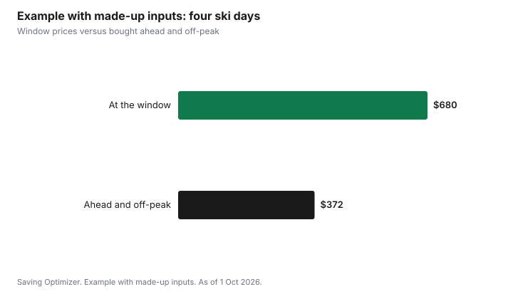

Sports · Canada
Cheaper Lift Tickets in Canada: Buy-Ahead Pricing, Multi-Day Cards and Discount Days

Lift tickets in Canada cost less when you buy them online ahead of time, ski on off-peak days, and use multi-day or prepaid products for the days you know you will ski. Many large resorts use dynamic pricing, so the price at the ticket window on a busy Saturday is often the highest you can pay, and the same day bought weeks ahead online can cost much less. For children aged 6 to 12, the Canadian Ski Council's SnowStart Kidz Pass for 2026-27 costs $39.99 plus tax and gives up to three visits at each of more than 60 participating Canadian ski areas, with pre-booking and adult rules. If you will ski more than a handful of days, compare these options with a season pass using the cost-per-day test.
Key takeaways
- Buy online, in advance. With dynamic pricing, window prices on busy days are usually the highest.
- Off-peak days, half days and night skiing are cheaper at many hills.
- Prepaid multi-day products, such as Whistler Blackcomb's EDGE Cards for residents of Canada and Washington State, lower the cost per day if you will use the days.
- SnowStart Kidz Pass 2026-27: $39.99 plus tax for ages 6 to 12, up to three visits at each of 60+ participating ski areas; visits must be pre-booked and some areas require a paying adult.
- Smaller community hills often cost far less than destination resorts.
- Example with made-up inputs: four days bought ahead and off-peak cost $372 instead of $680 at the window.
Why buying ahead matters now
Many large Canadian resorts price lift tickets dynamically: the price changes with the date, demand and how far ahead you buy. A Saturday in the Christmas holidays costs more than a Tuesday in January. A ticket bought online weeks ahead usually costs less than the same ticket bought at the window that morning. Some resorts sell only a limited number of tickets for busy days, so buying ahead also guarantees you can ski.
The trade-off is flexibility. Advance tickets are often non-refundable or have limited change options, and weather can be poor on the day you chose. Read the change and refund policy before buying. Some resorts allow a change for a fee or offer weather protection on certain products.
The options, from cheapest per day
| Option | Best for | Watch for |
|---|---|---|
| Season pass | Many days at one hill | Deadlines; see the season pass guide |
| Multi-resort pass (Epic, Ikon) | Many days across resorts or a big trip | Day caps, blackouts, U.S.-dollar pricing |
| Prepaid multi-day card | A known number of days at one resort | Expiry; blackout dates; residency rules |
| Advance online day ticket | A few planned days | Non-refundable; date-specific |
| Off-peak, half-day or night ticket | Flexible schedules | Hours; reduced terrain at night |
| Window ticket | Last-minute decisions | Usually the highest price |
Prepaid and multi-day cards
Some resorts sell prepaid packs of days at a lower per-day price. Whistler Blackcomb's EDGE Cards, sold in 2, 5 or 10 day packs, have been limited to residents of Canada and Washington State. A resort's multi-day ticket for a single trip, such as three or five consecutive days, also lowers the daily price compared with buying each day separately. Compare the per-day price with a season pass and with the Epic or Ikon options in the Epic vs Ikon vs local pass guide.
Kids: the SnowStart Kidz Pass
The Canadian Ski Council's SnowStart Kidz Pass is the main national program for children. For 2026-27 it costs $39.99 plus tax, is available once for children aged 6 to 12, and gives up to three visits at each of more than 60 participating Canadian ski areas. Visits must be booked ahead with each ski area. An adult must accompany the child, and some areas require the adult to buy a full-price ticket. Read each participating area's rules before you plan a trip around the pass. The guide to kids' skiing and snowboarding covers lessons, rentals and other programs.
Off-peak days, half days and night skiing
Weekdays outside school holidays are the cheapest days at most hills. Half-day tickets, starting at noon or ending early afternoon, cost less and often match how long children want to ski. Many hills near cities offer night skiing, which can be cheaper and fits after work. Spring skiing in March and April can also be cheaper, with longer days and softer snow.
Smaller hills
Community and regional hills, including club-run areas and municipal ski hills, often charge much less than destination resorts. For beginners and children, a smaller hill can be better: shorter lines, less intimidating terrain and lower lesson prices. Some smaller hills participate in the SnowStart Kidz Pass.
Other ways to save
- Ask about student, senior and young adult rates. Many hills price these lower.
- Learn-to-ski packages that include a lesson, rental and a beginner-area ticket can cost less than buying each separately.
- Corporate and association discounts, such as through a workplace, union or alumni group, sometimes include lift tickets.
- Buy rental equipment ahead online if the resort offers it; or rent seasonally from a local shop if you will ski often.
- Bring lunch. Resort food is often a large part of a ski day's cost.
- Carpool. Parking at some resorts charges per vehicle.
A cost-per-day worksheet
| Day | Date | Window price | Advance online price | Off-peak or half-day price | Price you will pay |
|---|---|---|---|---|---|
| Day 1 | |||||
| Day 2 | |||||
| Day 3 | |||||
| Day 4 | |||||
| Total |
Example with made-up inputs: four days of skiing
These numbers are an example with made-up inputs. They are not resort prices. A skier plans four days: two Saturdays in January, one day in the Christmas holidays and one in March. At the window on those days, each costs a made-up $170, or $680.
The skier instead buys ahead online and moves two days to weekdays. The two Saturdays bought three weeks ahead cost a made-up $118 each. The holiday day becomes a weekday half-day for $66. The March day, bought ahead on a weekday, is $70. Total $372.
| Day | Window | Ahead or off-peak |
|---|---|---|
| January Saturday 1 | $170 | $118 |
| January Saturday 2 | $170 | $118 |
| Holiday day | $170 | $66 (weekday half day) |
| March day | $170 | $70 (weekday, bought ahead) |
| Total | $680 | $372 |

Common mistakes
- Buying at the window on a busy Saturday.
- Buying a non-refundable advance ticket without reading the change policy.
- Buying a multi-day card with more days than you will use.
- Assuming the SnowStart Kidz Pass covers an adult or does not need booking.
- Forgetting rental, lessons, food and parking in the day's cost.
For a full trip, add lodging, food, rentals and travel as their own lines next to the lift tickets, so the cheapest ticket does not hide an expensive weekend.
Sources
- Canadian Ski Council, SnowStart Kidz Pass, snowpass.ca and store, as of 1 Oct 2026. $39.99 plus tax; ages 6 to 12; once per child; up to three visits at each of 60+ participating areas; pre-booking; adult accompaniment and full-price adult ticket at some areas.
- Whistler Blackcomb, EDGE Card pages, as of 1 Oct 2026. 2, 5 or 10 day packs for residents of Canada and Washington State.
- The four ski days, window and advance prices and every amount in the example table and chart are an example with made-up inputs.
Frequently asked questions
Is it cheaper to buy lift tickets online in Canada?
At many large resorts, yes. Dynamic pricing means tickets bought online in advance usually cost less than the same day at the window, especially on weekends and holidays. Advance tickets are often non-refundable or date-specific, so read the change policy.
What is the SnowStart Kidz Pass?
The Canadian Ski Council's SnowStart Kidz Pass for 2026-27 costs $39.99 plus tax and is available once for children aged 6 to 12. It gives up to three visits at each of more than 60 participating Canadian ski areas. Visits must be pre-booked, an adult must accompany the child, and some areas require a full-price adult ticket.
When are lift tickets cheapest?
Weekdays outside school holidays, half days, night skiing and spring dates are usually cheapest. Buying ahead online lowers the price further at resorts with dynamic pricing.
Should I buy a season pass or day tickets?
Divide the season pass price by the days you will really ski and compare it with the day-ticket price you would pay. If you will ski only a few days, advance day tickets or a multi-day card are usually cheaper.
Researched and drafted with AI assistance and fact-checked against official Canadian sources. How we create content.